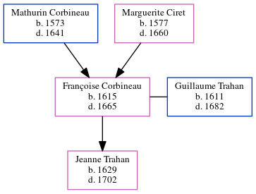

Françoise Trahan (née Corbineau) 1615 - 1665
[ Home ] | [ Calendar ] | [ Surnames Index ] | [ Census Index ] | [ Family History ]The child of Mathurin Corbineau and Marguerite Ciret, Françoise Corbineau, the 11 times great-grandmother of Michele Copp (née Phillips), was born in St Germain, Indre-et-Loire, Centre, France in 16151 and married Guillaume Trahan (with whom she had 1 child, Jeanne) in St Germain on Jul 13, 16271.
She died in 1665 in Port Royal, , Nova Scotia, Canada.
Parents
- Mathurin was born in 1573
- Marguerite was born in 1577
Children
- Jeanne was born in 1629
Citations
- U.S. and International Marriage Records, 1560-1900 Online publication - Provo, UT, USA: The Generations Network, Inc., 2004.Original data - This unique collection of records was extracted from a variety of sources including family group sheets and electronic databases. Originally, the information was deriv
Family Tree
Generated by ged2site. Last updated on Jun 6, 2024